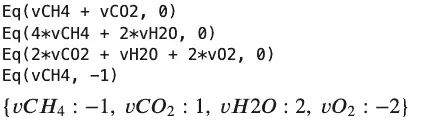
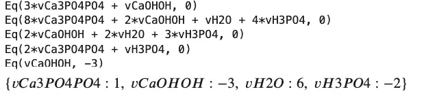
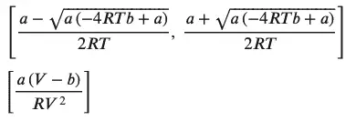
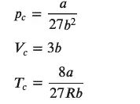
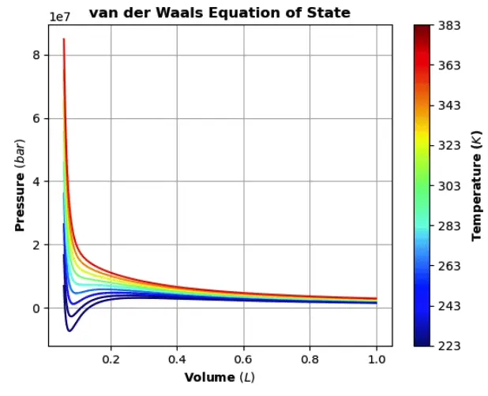

Python Chemistry: SymPy and ChemPy¶
Chemists are strongly addicted to Python. And that’s a good thing!
The chemistry profession has wholeheartedly embraced the Python language for many applications. From balancing multi-component equations to advances in quantum mechanics, chemists have taken advantage of its utility in numerous aspects of teaching, research, and production. Part of this growth is related to the focus on STEM in many areas of our society while another part is the various Python-based packages and systems that facilitate its ease of use.
This article will look at some of these packages that can make life easier for chemists and other scientists. The first of these is SymPy, the fascinating implementation of computer algebra. It has applications in many fields including chemistry, The second is ChemPy, a time-saving toolbox created using SymPy and targeted for applications in chemistry. Both are characterized by a focus on equations and provide many methods to apply and manipulate those equations.
Using SymPy for Chemistry in Python¶
A companion article provided a first look at SymPy (SymPy: Solving Math Equations in Python and Jupyter). This article will provide a more focused look into some possible uses of interest to those in chemistry and allied professions. The idea behind SymPy is that it is possible to explore many aspects of mathematics using symbols related to the concept being studied. These symbols are then operated on with well-known techniques to provide not just solutions but also a deeper understanding of the meaning behind the solutions.
Using a symbolic computation tool for chemistry may seem strange initially, but the idea is no stranger to chemists as much of the science is based on symbols! Consider these two equations:
y = mx + b
CH4 = C + 4H
Both have meaning in context, and both are symbolic representations of important concepts. I specifically used “=” above to show how this symbol can have different meanings depending on where and how it is used. In a chemistry sense, “=” can mean “is composed of” or “can be transformed to be.” Of course, mathematicians have reserved the “=” for the algebra system, but Sympy allows us to easily manipulate both.
Chemistry is full of equations, and many are like the equation above in that they represent a change of one or more molecules to a different mix of molecules. A simple example is the combustion of methane to carbon dioxide and water:
CH4 + O2 -> CO2 + H2O
To write this equation properly, the atoms on each side must be identical in quantity (“Matter is neither created nor destroyed in a chemical reaction.” - Antoine Lavoisier). Chemists are familiar with the fun challenge of balancing equations. This can get rather complicated, but SymPy helps! First, we assign some symbols and then explore how to express the chemical equation in “SymPy terms.”
# assumes the Sympy package has been installed, for example using pip
import sympy as sp
sp.init_session()
The process using SymPy is not totally intuitive to a chemist but is exactly correct mathematically. A balanced equation requires that reactants and products must each have the same number of atoms of each type. The actual process is quite easy.
First, we create symbols to represent the coefficients, then show SymPy which atoms should be equal. Second, we create equations that denote the numbers of each type of atom. These equations are set up so that the coefficients add to zero. The coefficient (on carbon for example) will be a negative number if it is a reactant and a positive number if it is a product. The sum of the coefficients is always zero.
In the following code, we set up the products, setting each to zero:
sp.var(['vCH4', 'vO2', 'vCO2', 'vH2O']) # variables which hold the coefficients
atomBalances = [
sp.Eq(vCH4 + vCO2,0), # Carbon
sp.Eq(4*vCH4 + 2*vH2O,0), # Hydrogen
sp.Eq(2*vO2 + +2*vCO2 + vH2O,0) # Oxygen
]
for eqn in atomBalances:
print(eqn)
Output:
Eq(vCH4 + vCO2, 0)
Eq(4*vCH4 + 2*vH2O, 0)
Eq(2*vCO2 + vH2O + 2*vO2, 0)
A final step is necessary because there is an infinite number of exactly correct solutions. The term from linear algebra is the basis vector for the system. We tell SymPy to use -1 on CH4 (methane) because it is a reactant. Once this is available; the set of equations can be easily solved
basis = [sympy.Eq(vCH4,-1)]
#a different basis just multiplies all the coefficients. Same result if a +1 basis is supplied for CO2
#basis = [sympy.Eq(vCO2,1)]
for eqn in atomBalances + basis:
print(eqn)
sympy.solve(atomBalances + basis)
Output:

Here is a complicated equation illustrating the need for an approach to add some chemistry knowledge to Sympy.
Ca(OH)2 + H3(PO)4 -> Ca3(PO4)2 + H2O
It is solved in these steps:
sp.var(['vCaOHOH', 'vCa3PO4PO4', 'vH3PO4'])
atomBalances = [
sp.Eq(vCaOHOH + 3*vCa3PO4PO4 ,0) , # Calcium
sp.Eq(2*vCaOHOH + 8*vCa3PO4PO4 +4*vH3PO4 + vH2O , 0), # Oxygen
sp.Eq(2*vCaOHOH + 2*vH2O + 3*vH3PO4 , 0), # Hydrogen
sp.Eq(vH3PO4 + 2*vCa3PO4PO4,0 ) # Phosphorus
]
for eqn in atomBalances:
print(eqn)
Output:
Eq(3*vCa3PO4PO4 + vCaOHOH, 0)
Eq(8*vCa3PO4PO4 + 2*vCaOHOH + vH2O + 4*vH3PO4, 0)
Eq(2*vCaOHOH + 2*vH2O + 3*vH3PO4, 0)
Eq(2*vCa3PO4PO4 + vH3PO4, 0)
Some simple variations are fine:
# basis = [sympy.Eq(vCaOHOH,-1)] # correct fractional coefficients
basis = [sp.Eq(vCaOHOH,-3)] # correct integer coefficients
for eqn in atomBalances + basis:
print(eqn)
sp.solve(atomBalances + basis)

We will revisit balancing equations in a later section of this post. Following this equation trail, we will discuss some that you can discuss at the next barbecue. The propane grill appears, and immediately someone asks “What is the pressure in that thing?” To answer let’s study a fairly famous equation. That is the equation for an ideal gas, PV=nRT.
Anyone who recognizes the equation for an ideal gas also realizes that 30 minutes after they were introduced to it, they were also taught would be useless in the real world! This annoying condition was corrected over many years by clever chemists introducing many ‘corrections’ to this equation. These corrections were cleverly designed to exasperate generations of chemists and chemical engineers. Of the many, let’s look at the Van Der Waals Equation of state.
# Preliminary symbols, constants and equations
# Note that Sympy can rearrange equations for you via solve
p,V,T=sp.symbols("p,V,T", positive=True, real=True) # variables with optional constraints
R,a,b=sp.symbols("R, a, b", posiptive=True, real=True, constant=True) # constants with optional constraints
ideal_p = n*R*T/V
vdw_eos=R*T/(V-b)-(a/V**2) # Van der Waals Equation Of State
# See how equations can be rearranged
van_der_walls_solved_for_volume = solve(vdw_eos, V)
van_der_walls_solved_for_temparature = solve (vdw_eos, T)
display(van_der_walls_solved_for_volume)
display(van_der_walls_solved_for_temparature)
Output:

As shown above, Sympy’s ability to rearrange equations as needed is a great help and can be used in any setting through the ‘solve’ function.
The van Der Waals equation can be displayed as a graph of pressure versus volume, and for a given temperature it is called an isotherm. Of interest are the conditions of pressure, volume, and temperature that form a liquid state. Propane, butane, and liquified natural gas(LNG) represent materials that have been widely studied. A key feature of an isotherm is that the critical pressure, volume, and temperature can be found from the equation of the state curve. It’s common to use ‘V’ to represent the molar volume (V/n), and these equations will use this convention.
Instead of guessing from a plot, however, we can calculate the critical parameters with help from SymPy. We’ll all recall from calculus that a minimum occurs when the first derivative is zero. The critical point is defined where the second derivative is also zero. Instead of reviewing calculus for hours, let Sympy do the work.
dp=diff(vdw_eos,V) #first derivative from the equation above
ddp=diff(vdw_eos,V,2) #second derivative#
display (dp, ddp) #take a look
pressure_eq=Eq(p,vdw_eos) #solve the equation for p
dp_eq=Eq(0,dp) #set the derivatives to zero
ddp_eq=Eq(0,ddp)
display(pressure_eq,dp_eq,ddp_eq) #see what they look like
#the critical point will have three values related to pressure, volume and temperature
#some new symbols for this
pc,Vc,Tc=symbols("p_c, V_c, T_c ")
critpoint,=solve([pressure_eq,dp_eq,ddp_eq],[p,V,T]) #the equation has three roots
pcr,Vcr,Tcr=[critpoint[i] for i in range(len(critpoint))]
display(Eq(pc,pcr), Eq(Vc,Vcr), Eq(Tc,Tcr))
The code above displays three equations, one for each variable This will provide three equations, one for each variable (pressure, volume, and temperature).

Now that we have a solution, let’s see how to provide some numbers. Sympy has several methods to convert the symbolic equation into a form that gives a numeric result. One of these, the subs method, allows for substitution into an equation using values for one or more variables. For example, we can substitute the value 8.314 for the constant ‘R’ or make other substitutions.
(A warning about units: the actual value for any equations of state parameters is highly dependent on the unit system. The literature in this area is inconsistent in using the SI standard – International System of Units! SymPy does have provisions to specify units that should be used for critical applications.)
Here’s an example of how we might substitute variables:
vdw_eos.subs (R, 8.314)
vdw_eos.subs (V,100)
vdw_eos.subs ({R: 8.314, V:100})
Another approach is to convert the equation into its numeric form using the lambdify method then call the new expression with the values of interest.
numeric_pressure=sp.lambdify([R,T, V, a, b], vdw_eos)
print ( numeric_pressure(8.314, 300,100, 4.225 / 1.e6, 0.03707 / 1.e3) )
# prints 24.942009245580326
The above will be a good starting point if you love thermodynamics but won’t easily answer the barbecue question! Wikipedia tells us the answer that the tank is about 10 bar.
In order to properly finish this topic, the sections below will reiterate and illustrate the steps needed to easily transform the symbolic equation to one that can deliver numeric results. A nice way to illustrate this will be a colorized graph of the equation with some real-world data.
z=vdw_eos.subs ({R: 8.314, a:.36616, b:4.2925e-5 })
# display(z) # Note it still contains symbols
press_z=lambdify([T, V], z) # press_z is now a Python callable
# Optionally show data for carbon dioxide
# print(press_z (223.15, 6e-5) ) #T=223.15; V=6e-5 ->returns 6943008.947454035
# generate the data array to be plotted
# set the temperature range
T1, T2 = -50, 120 # Start and end temperatures, °C
T_step = 20 # Step size, °C
myT = np.arange(T1+273.15,T2+273.15,T_step)
# set the volume range
V1, V2 = 0.00006, 0.001 # Start and end molar volume, m3
V_step = 0.000001 # Step size, m3
myV = np.arange(V1,V2,V_step)
myP = np.zeros((len(myT),len(myV))) #array to hold the results
#do the calculations
for i in range(0,len(myT)):
for j in range(0,len(myV)):
myP[i,j] = press_z(myT[i], myV[j])
print(shape(myP)) # Show size of resulting data
# Outputs: (9, 940)
At this point we’ve run the data for the range of temperature and volume we’re interested in. Next, we’ll plot the data.
The code for the plot does not use the SymPy plot function but rather the matplotlib backend. The graphing routine was edited from a Medium article on the Van der Walls equation of state.
import matplotlib as mpl
import matplotlib.pyplot as plt
%matplotlib inline
c = np.arange(1, len(myT) + 1 )
norm = mpl.colors.Normalize(vmin=c.min(), vmax=c.max())
cmap = mpl.cm.ScalarMappable(norm=norm, cmap=mpl.cm.jet)
cmap.set_array([])
plt.grid()
for i, yi in enumerate(myP):
plt.plot(myV*1000, yi, c = cmap.to_rgba(i))
plt.title("van der Waals Equation of State", weight="bold")
plt.xlabel("Volume $(L)$", weight="bold")
plt.ylabel("Pressure $(bar)$", weight="bold")
#visualize temperature bar
cbar=plt.colorbar(cmap, ticks=c, ax=plt.gca())
cbar.set_ticks(c)
cbar.set_ticklabels(myT)
cbar.ax.set_yticklabels(["{:.0f}".format(i)+" " for i in myT])
cbar.ax.set_ylabel('Temperature ($K$)', weight="bold")
If all goes well, it should look like this:

Introducing ChemPy¶
As we’ve seen, SymPy is a useful tool for many areas in chemistry, Now let’s explore a package that takes advantage of the power of SymPy but adds the ‘language’ of chemistry. A current favorite is ChemPy, available as a package or on GitHub. Installation on Macs and Linux is straightforward using pip, but for Windows, you will need to load each required package by hand. Some required packages related to the Sundials solvers may not load but are not needed for this code.
We’ll assume ChemPy has been installed and illustrate some code demonstrating the ‘chemistry awareness of the package. The context is in balancing equations, but there is more to it.
Of interest is the use of Python dictionaries and how one should denote the left-hand side and right-hand side (lhs and rhs) of the equation to be balanced.
from chempy import balance_stoichiometry
reactants, products = balance_stoichiometry( {'NH4ClO4', 'Al'}, {'Al2O3', 'HCl', 'H2O', 'N2' } )
# print(dict(reactants)) # leads to {'Al': 10, 'NH4ClO4': 6}
# print(dict(products)) # leads to {'Al2O3': 5, 'H2O': 9, 'HCl': 6, 'N2': 3}
from chempy import mass_fractions
for fractions in map(mass_fractions, [reactants, products]):
print({k: '{0:.3g} wt%'.format(v*100) for k, v in fractions.items()})
Output:
from chempy import balance_stoichiometry
reactants, products = balance_stoichiometry( {'NH4ClO4', 'Al'}, {'Al2O3', 'HCl', 'H2O', 'N2' } )
# print(dict(reactants)) # leads to {'Al': 10, 'NH4ClO4': 6}
# print(dict(products)) # leads to {'Al2O3': 5, 'H2O': 9, 'HCl': 6, 'N2': 3}
from chempy import mass_fractions
for fractions in map(mass_fractions, [reactants, products]):
print({k: '{0:.3g} wt%'.format(v*100) for k, v in fractions.items()})
Here we demonstrate how to set up the earlier equations that we discussed in the pure SymPy section:
# CH4 + O2 --> CO2 + H2O #SymPy answer was:{𝑣𝐶𝐻4:−1, 𝑣𝐶𝑂2:1, 𝑣𝐻2𝑂:2, 𝑣𝑂2:−2}
reactants, products = balance_stoichiometry( {'CH4', 'O2'}, {'CO2', 'H2O' } )
print(dict(reactants))
print(dict(products))
print("--------------------------")
# a tougher one
# sympy.var(['vCaOHOH', 'vH3PO4', 'vCa3PO4PO4', 'vH2O'])
# SymPy answer was {𝑣𝐶𝑎3𝑃𝑂4𝑃𝑂4:1, 𝑣𝐶𝑎𝑂𝐻𝑂𝐻:−3, 𝑣𝐻2𝑂:6, 𝑣𝐻3𝑃𝑂4:−2}
reactants, products = balance_stoichiometry( {'Ca(OH)2', 'H3(PO4)'}, {'Ca3(PO4)2', 'H2O' } )
print(dict(reactants))
print(dict(products))
Output:
{‘CH4’: 1, ‘O2’: 2} {‘CO2’: 1, ‘H2O’: 2}¶
Python Chemistry: SymPy and ChemPy{‘Ca(OH)2’: 3, ‘H3(PO4)’: 2}¶
{‘Ca3(PO4)2’: 1, ‘H2O’: 6}
This output is a lot simpler, and the result is clear about reactants and products!
The next section will cover how ChemPy can help generate kinetic models for reaction simulation. This is a very active area of investigation in chemistry, and adequate kinetic models are critical to understanding many important processes.
ChemPy can interpret common chemical notation and convert it to the proper math equations to be used in a solver for differential equations. The example we’ll consider is the reaction of molecular bromine and nitrous oxide to synthesize nitrosyl bromide. In a closed system, this is actually an equilibrium reaction. ChemPy sorts it out!
ChemPy has a nice feature where we can use the standard notation to indicate a reaction. First, this string representation of a reaction is processed into a set of chemical equations. Then these are converted to a series of equations and parameters for eventual use by the Chempy ODE solver. I would suggest starting a new notebook to handle the necessary imports.
from collections import defaultdict
import matplotlib.pyplot as plt
from chempy import Reaction, Substance, ReactionSystem
from chempy.kinetics.ode import get_odesys
import sympy
sympy.init_printing()
%matplotlib inline
#now for the reaction
from chempy import balance_stoichiometry
reactants, products = balance_stoichiometry( {'NO', 'Br2'}, {'NOBr'} )
print(dict(reactants)) #printing is for understanding the system
print(dict(products))
A, B, C = map(Substance, 'ABC') #map some symbols to our equation
# how Chempy sets up the equation:
str_massaction = """
2 A + B ->2 C ; 'k1'
2 C -> 2 A + B; 'k2'
"""
#the spaces are required!
#Set up the reaction system
rsys = ReactionSystem.from_string(str_massaction, substance_factory=lambda formula: Substance(formula))
Display (rsys.substance_names() )
#want a peek inside; use "ReactionSystem?" inside of a notebook cell for details
odesys, extra= get_odesys(rsys, include_params=False, lower_bounds=[0, 0, 0])
display(odesys.exprs, odesys.params, odesys.names, odesys.param_names ) # needed to integrate the ode
#do the work getting time,concentration values initial rate constants
t_max= 10
A0=1.0 #used to create the very logical dictionary below
B0=1.0
C0=0.0
tout, yout, info = odesys.integrate(
t_max, {'A': A0, 'B': B0, 'C': C0},
{'k1': 0.42, 'k2': 0.17 },
integrator='cvode', nsteps=3000)
#What does it look like?
plt.plot(tout, yout)
plt.grid()
plt.legend(['NO', 'Br$_2$', 'NOBr'])

The graph illustrates the equilibrium reaction-each of the components reaches a steady state. This can be a great start to model any number of reaction steps in a mechanism.
Another interesting feature of ChemPy is that it supports more detailed engineering models such as a Continuous Stirred Tank Reactor (CSTR). For example:
cstr, extra2 = get_odesys(new_rsys, include_params=False, cstr=True)
The user just needs to add the chemistry part to simulate a commercial reactor.
Some parts of ChemPy deal with complicated equilibria in solution, reaction kinetics with appropriate SI units, fitting data to the calculated values, and the energetics of protein folding. And there’s more! The examples included with ChemPy demonstrate how to perform various calculations in an interactive mode. It is truly an amazing package for any chemist.
These short notes barely do justice to the capability of Sympy and the utility of ChemPy. These packages add to core Python features like equation solving (including differential equations) and exploring thermodynamics. This area is under constant development there is no obvious limit to its implementation throughout the various fields of chemistry.